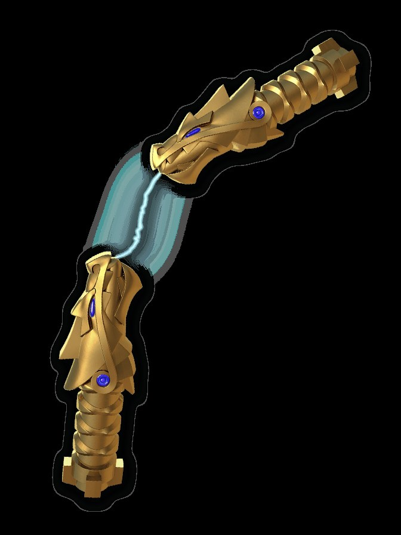

Nunchucks of Lightning
The Golden Weapon of Lightning. Two dragon heads held together by a living bolt — fry an enemy with a single blow, chain the storm across a battlefield, spin it into a frenzy and ride the sky on a glider of lightning. The storm, however, answers only its own.

Nunchucks of Lightning
Metaphysical Law: The storm strikes first and asks never.
Properties & techniques
Exact player-facing procedures
Field notes. Subject: weather with a handle. Three truths govern it. First: the Nunchucks are pure energy given manners — the dragon heads are the manners, the lightning between them is the energy, and the distinction matters because every property of this weapon is the bolt deciding what to do, not the wielder. You aim the storm; you do not command it. Second: the frenzy is the weapon's native language. Spun rapidly, the Nunchucks build a charge no still hand can hold — Storm Frenzy is not a technique you activate, it is the weapon telling you it is ready, and the damage climbs because the storm is enjoying itself. Third: the attunement demand is meteorological. Jay's storm answered Jay; the bolt refused to hold its shape for hands it did not recognize, collapsing into dead chain. A refused wielder spins two golden sticks joined by nothing.
Relic profile
1d8 bludgeoning each (light, paired — attack with both as one Attack action) · +4 to attack and damage rolls · Relic DC
Jujutsu origin
Forged by the First Spinjitzu Master from the gold of the Golden Peaks, one of four weapons that created Ninjago itself. The jujutsu reading: this is lightning that has been taught to wait. Unbound lightning strikes once and is gone; the Nunchucks hold the strike between two dragon heads indefinitely, which means the wielder carries a thunderstorm in their hands the way others carry a sword. Jay understood — you don't swing the storm, you let it go.
Lightning Strike — Action · 3 CE
One blow, the whole storm. Make a melee attack; on a hit, deal an additional 8d10 lightning damage — "fry an enemy with a single blow." If the target is wearing metal armor or standing in water, it has disadvantage on any save against this property's riders.
Chain Lightning — Action · 5 CE
Release the bolt. Lightning arcs to up to 5 targets within 60 ft of you (each within 30 ft of the last). Each makes a DEX save vs your Relic DC: 6d10 lightning damage on a failure, half on a success.
Storm Frenzy — Bonus Action · 2 CE
Spin the Nunchucks into a frenzy. Until the end of your turn, each hit with the Nunchucks deals an additional 1d10 lightning damage, increasing by 1d10 per consecutive hit (2d10 on the second, 3d10 on the third, maximum 5d10). The frenzy ends early if you miss or take no Attack action on your turn.
Storm Glider — 1 hour ritual, once per dawn
The Nunchucks unfold into a lightning glider, as they did for Jay. You gain a fly speed of 60 ft for 1 hour; you cannot hover, and the glider collapses if you take lightning damage from an outside source. Dismiss as a bonus action.
Binding Vow — The Storm Chooses
The Nunchucks grant their full power only to a wielder the storm recognizes — the GM judges affinity (lightning techniques, storm sorcery, a life lived fast). All others are refused: the bolt between the dragon heads collapses into dead chain — Chain Lightning and Storm Glider are unavailable, and Lightning Strike deals half damage. The storm does not answer strangers.
Cursed-tool attunement
Campaign canon